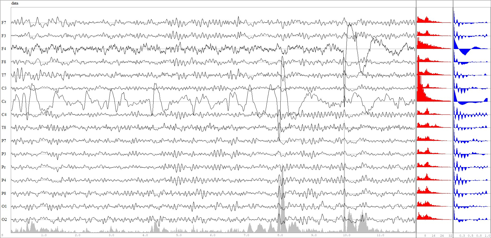
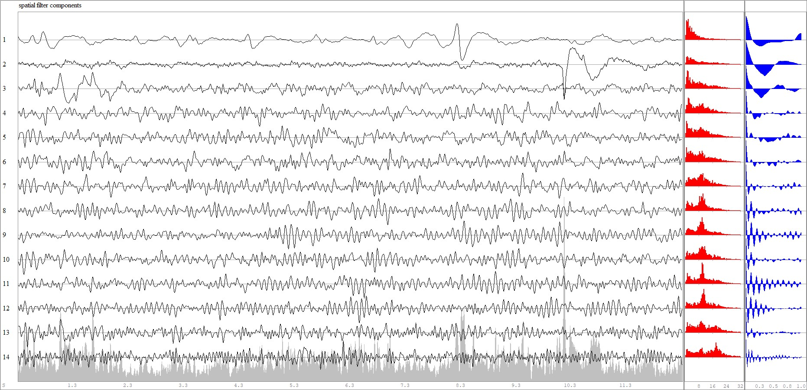
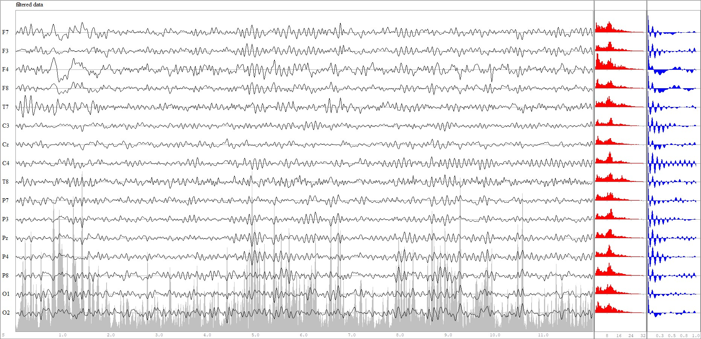
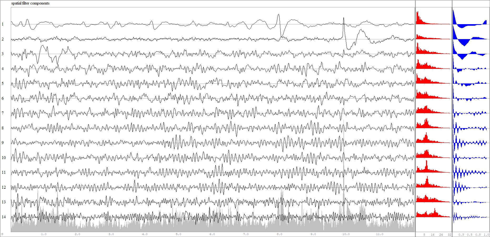
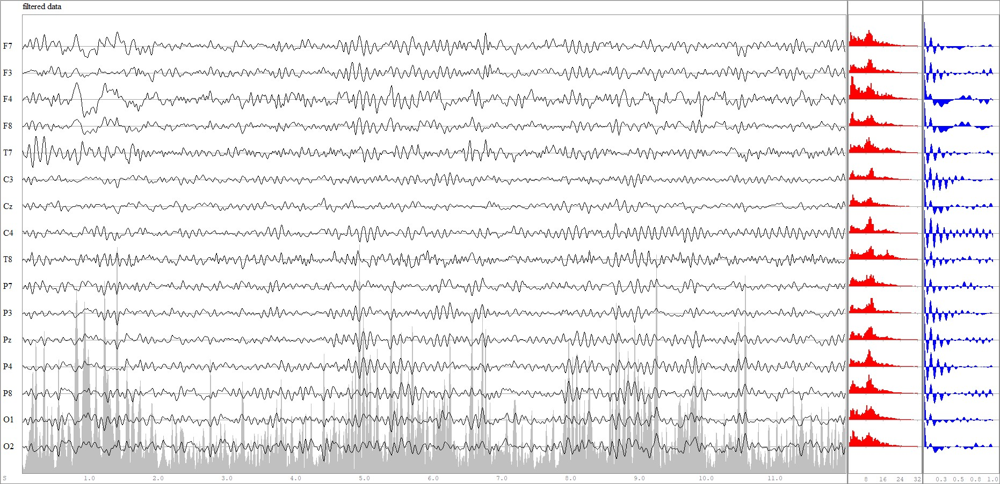

Tutorial SF 1
Gievn an EEG data matrix $X$ of dimension $t⋅n$, a spatial filter $Bₛ$ is a matrix of dimension $n⋅p$, with $p<n$, having a left-inverse $Aₛ$ of dimension $p⋅n$ verifying $AₛBₛ=I$, where $I$ is the identity matrix.
The goal of spatial filters is to filter out $n-p$ undesired components, thus they are very useful for removing noise, where each spatial filter defines the 'noise' in a specific manner. They work by sorting the components according to a measurable criterion. Then, the components within a desired range of the criterion are eliminated.
In fact, $Bₛ$ is formed by a subset of $p$ columns of $B$ and $Aₛ$ is formed by the same subset of $p$ rows of $A$.
All filtered components are given by $Y=XB$ [Eq.1].
$Y$ has the same dimension as $X$. Each component is a spatial combination of the sensors. The subset of interest is given by $Yₛ=XBₛ$.
The filtered data in the sensor space retaining only the components of interest is given by $Z=YₛAₛ=XBₛAₛ$ [Eq.2].
Constructing Spatial Filters
The package (Diagonalizations.jl)[https://github.com/Marco-Congedo/Diagonalizations.jl], which is re-exported by Eegle, features several useful spatial filters for EEG, such as:
- (PCA)[https://marco-congedo.github.io/Diagonalizations.jl/stable/pca/], which sort components by variance
- (Whitening)[https://marco-congedo.github.io/Diagonalizations.jl/stable/whitening/], as PCA, but also standardizing the variance
- (CSP)[https://marco-congedo.github.io/Diagonalizations.jl/stable/csp/], which can sort component either
- by variance ratio between one class with respect to another
- by signal-to-noise ratio of ERPs (X-DAWN)
- (MCA)[https://marco-congedo.github.io/Diagonalizations.jl/stable/mca/], which sort components by cross-covariance between two EEG epochs
- (CCA)[https://marco-congedo.github.io/Diagonalizations.jl/stable/cca/], which sort components by cross-correlation between two EEG epochs.
In this tutorial, we will see how to construct spatial filters based on the generalized eigenvalue-eigenvector decomposition (GEVD), that is, using one of the most useful and powerful technic in signal processing.
In linear algebra, GEVD is synonymous of joint diagonalization, in that such spatial filters verify
$\left \{ \begin{array}{rl}B^TCB=I\\B^TSB=Λ \end{array} \right.$, $\hspace{1cm}$ [Eq.3]
where $Λ$ is a diagonal matrix holding the generalized eigenvalues, which are sorted according to the specified criterion, and $B$ is the matrix holding in the columns the corresponding generalized eigenvectors providing the filters.
For most spatial filters, $C$ is the covariance matrix of $X$ and $S$ is a covariance matrix which definition yields the specificity of each spatial filter.
Let us see now how to construct two new spatial filters:
- Slow Feature Analysis (SFA: (Wiskott and Sejnowski, 2002)), which sort components data by slowness,
- MoSc ((Molgedey and Schuster, 1994)), which sort components by autocorrelation,
As we will show, these two filters can give similar results, since slowness and autocorrelation at early lags are closely related characteristics of time-series.
Note that, in practice we do not compute the filters by GEVD, but by a two-step procedures, which is numerically more stable:
- Let $\hspace{0.1cm}C=V^TDV$ be the eigenvalue-eigenvector decomposition (EVD) of $C$ and define
$W=VD^{-1/2}$ and $W^{+}=D^{1/2}V^T$
$W$ is a whitening matrix, that is, it verifies $W^TCW=I$.
- do $\hspace{0.1cm}\textrm{EVD}(W^TSW)=UΛU^{T}$
Finally, we obtain $B=WU$ and `A=U^TW^+
As a data example we use the EXAMPLE_P300_1 example P300 BCI example file provided with Eegle, selecting 12s from second 70 to second 82. Figure 1 shows the time series of the data.

Figure 1 The EEG epoch used as example, along with the amplitude spectra (red) and autocorrelation function (in blue)As it can be seen, there are artifacts due to electrode contact loss, punctually at electrode F4 and all over the epoch at electrode Cz.
SFA
It is defined by [Eq.3] setting
- $C$ as the sample covariance matrix of $X$
- $S$ as the sample covariance matrix of the first-differences of $X$.
The code to compute $B$ and $A$ with the two-step procedures here above is
function sfa(X::AbstractMatrix{T};
eVar::Union{Float64, Int64, Nothing} = nothing) where T<: Real
C = covmat(X; covtype = SCM)
S = covmat(diff(X, dims=1); covtype = SCM)
white = whitening(C; eVar)
U = eigvecs(white.F'*S*white.F)
return white.F*U, U'*white.iF
endThe SFA is obtained as
B, A = sfa(X)All filter components [Eq.1] are given as
Y = X*B # all filter componentsThe plot of $Y$ is shown in figure 2.

Figure 2 All filter componenets obtained by SFA. They are sorted by slowness.We ought to remove the first two components and compute the filtered data in the sensor space retaining only the remaining components [Eq.2]:
p = n-2
D = Diagonal([zeros(n-p); ones(p)])
Z=Y*D*GThe plot of the filtered data is in Fig. 3.

Figure 3 Data filtered by SFA removing the first two components.As one can see the artifacts have been removed.
!!! warning
No spatial filter is perfect. Along with undesired components, some cerebral activity will be filtered out as well.
While this is not an obstacle in some applications, for example, classification of data, it may be so in others,
for example, when we wish to interpret the result neurophysiologically in a clinical study.MoSc
It is again defined by [Eq.3] setting
- $C$ as the sample covariance matrix of $X$
- $S$ as the autocovariance matrix with a lag, here taken as 1.
The code to compute $B$ and $A$ with the two-step procedures here above is analogous to the code for the SFA:
function mosc(X::AbstractMatrix{T};
eVar::Union{Float64, Int64, Nothing} = nothing) where T<: Real
C = covmat(X; covtype = SCM)
S = hermitianpart(covmat(X, 1; covtype = SCM))
white = whitening(C; eVar)
U = reverse(eigvecs(white.F'*S*white.F), dims=2)
return white.F*U, U'*white.iF
endAll in all as for SFA, the MoSc is obtained as
B, A = mosc(X)All filter components [Eq.1] are given as
Y = X*B # all filter componentsThe plot of $Y$ is in Fig. 4

Figure 4 All filter componenets obtained by MoSC. They are sorted by autocovariance at lag 1.Again, we ought to remove the first two components and compute the filtered data in the sensor space retaining only the remaining components [Eq.2]:
p = n-2
D = Diagonal([zeros(n-p); ones(p)])
Z=Y*D*GThe plot of the filtered data is in Fig. 5.

Figure 5 Data filtered by MoSc removing the first two components.As one can see the artifacts have been, once gain, removed. The result is very close to the one obtained by SFA.
Conclusion
Using joint diagonalization a very large number of filters can be obtained.
!!! tip "Blind Source Separation"
In general, better results are obtained extending procedures based on the joint diagonalization of two matrices to
the approximate joint diagonalization of several matrices ([congedo2008bss](@cite), [Congedo2013HDR](@cite), [GouyPailler2010](@cite)).